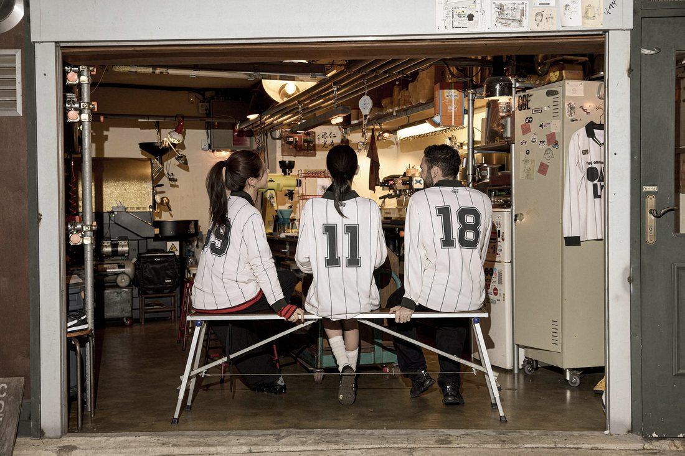
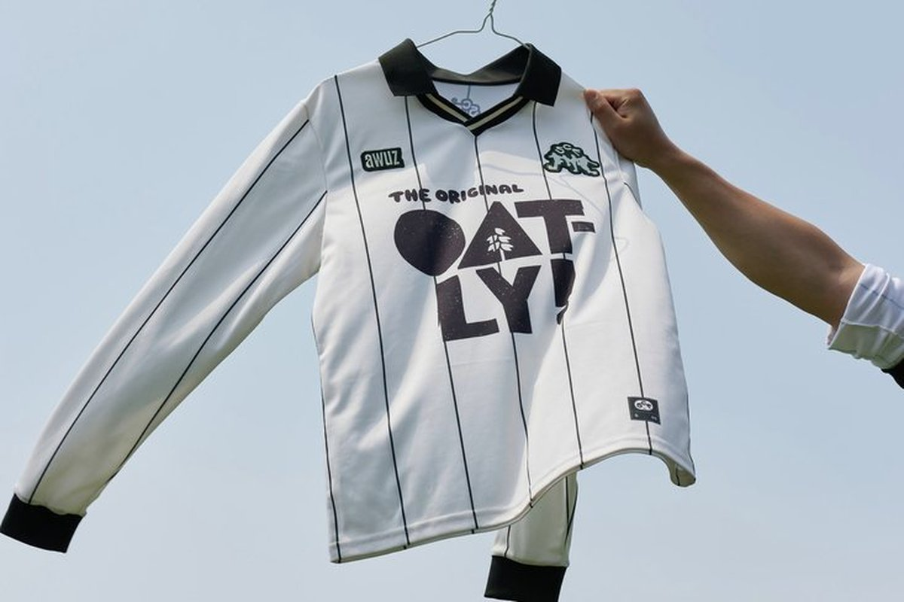
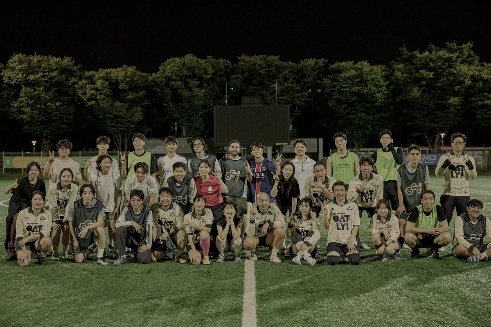
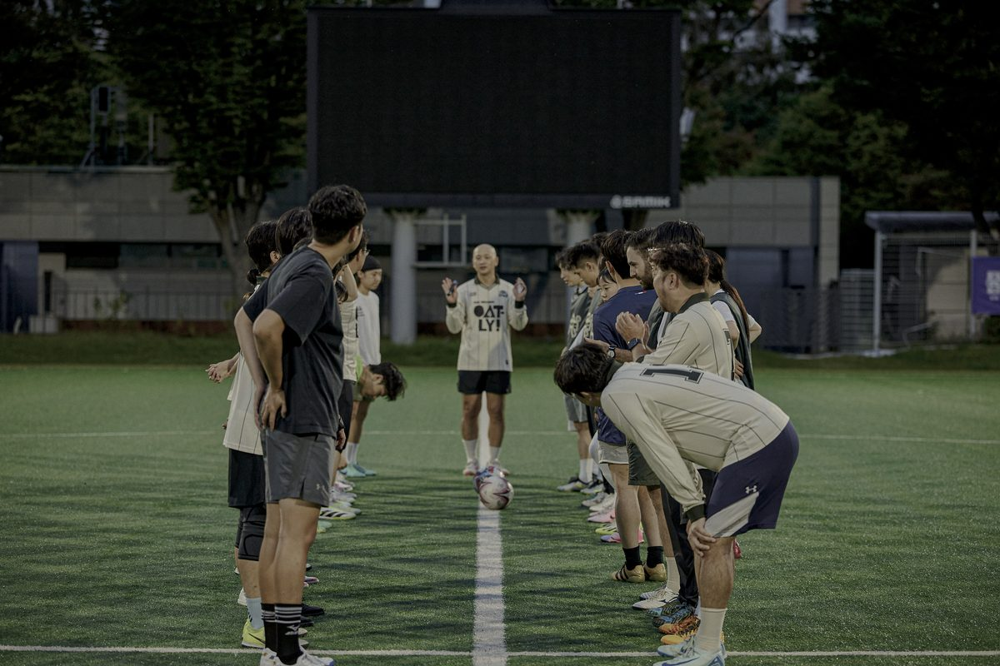
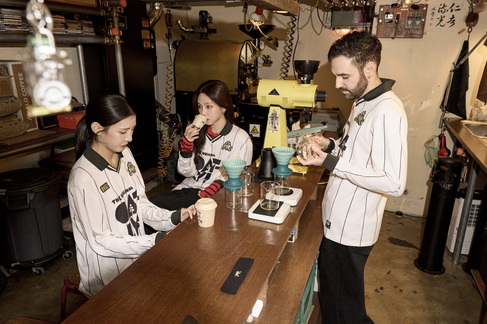

// OVERVIEW
사이드 프로젝트이자 취미로 혼성 풋살 팀 '싸커피'를 운영하고 있습니다. 커뮤니티가 지속될 수 있도록 체계적으로 운영하는 동시에, 팀의 브랜드 가치를 높이기 위해 글로벌 기업 오틀리와 스폰서십을 체결하고 유니폼 제작·룩북 촬영 같은 다양한 프로젝트를 만들고 있습니다. 구단주로서 직접 커뮤니케이션하고 의사 결정하며 브랜드 감도를 유지합니다.
// 커뮤니티 현황
39명
현재 활동 회원
50명
누적 참여
3명
객원 멤버
6명
가입 대기
2024년 9월 시작 이후 누적 50명이 함께했고, 이탈은 9명에 그쳤습니다. 현재 39명(+객원 3)이 활동 중이며 6명이 가입을 대기하고 있어 — 취미로 시작한 커뮤니티가 대기가 생길 만큼 안정적으로 유지되고 있습니다.
// 수행 업무
- 풋살 커뮤니티 총괄 운영 — 정기 운영 체계 설계 및 멤버 커뮤니케이션
- 글로벌 기업 오틀리와 브랜드 스폰서십 체결 (제작 비용 지원)
- 유니폼 제작 및 브랜드 룩북 촬영 기획·디렉팅
- 브랜드 디자이너·포토그래퍼·팀원과 협업해 팀 브랜드 가치 상승 주도
// 결과물
사진








영상